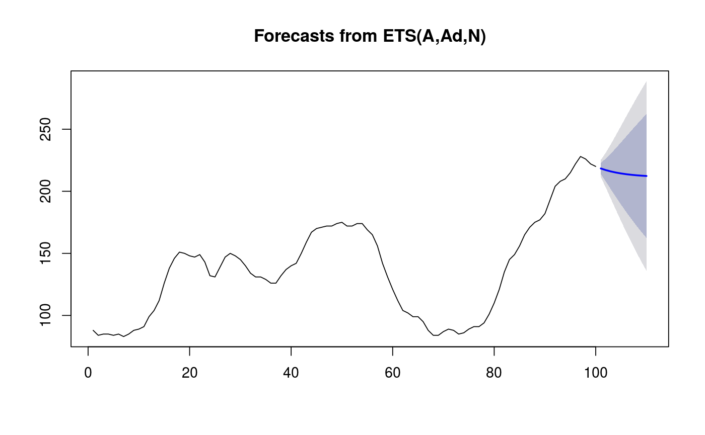

forecast is a generic function for forecasting from time series or
time series models. The function invokes particular methods which
depend on the class of the first argument.
forecast(object, ...) # S3 method for default forecast(object, ...) # S3 method for ts forecast(object, h = ifelse(frequency(object) > 1, 2 * frequency(object), 10), level = c(80, 95), fan = FALSE, robust = FALSE, lambda = NULL, find.frequency = FALSE, allow.multiplicative.trend = FALSE, model = NULL, ...)
| object | a time series or time series model for which forecasts are required |
|---|---|
| ... | Additional arguments affecting the forecasts produced. If
|
| h | Number of periods for forecasting |
| level | Confidence level for prediction intervals. |
| fan | If TRUE, |
| robust | If TRUE, the function is robust to missing values and outliers
in |
| lambda | Box-Cox transformation parameter. |
| find.frequency | If TRUE, the function determines the appropriate period, if the data is of unknown period. |
| allow.multiplicative.trend | If TRUE, then ETS models with multiplicative trends are allowed. Otherwise, only additive or no trend ETS models are permitted. |
| model | An object describing a time series model; e.g., one of of class
|
An object of class "forecast".
The function summary is used to obtain and print a summary of the
results, while the function plot produces a plot of the forecasts and
prediction intervals.
The generic accessors functions fitted.values and residuals
extract various useful features of the value returned by
forecast$model.
An object of class "forecast" is a list usually containing at least
the following elements:
A list containing information about the fitted model
The name of the forecasting method as a character string
Point forecasts as a time series
Lower limits for prediction intervals
Upper limits for prediction intervals
The confidence values associated with the prediction intervals
The original time series
(either object itself or the time series used to create the model
stored as object).
Residuals from the fitted model. For models with additive errors, the residuals will be x minus the fitted values.
Fitted values (one-step forecasts)
For example, the function forecast.Arima makes forecasts based
on the results produced by arima.
If model=NULL,the function forecast.ts makes forecasts
using ets models (if the data are non-seasonal or the seasonal
period is 12 or less) or stlf (if the seasonal period is 13 or
more).
If model is not NULL, forecast.ts will apply the
model to the object time series, and then generate forecasts
accordingly.
Other functions which return objects of class "forecast" are
forecast.ets, forecast.Arima,
forecast.HoltWinters, forecast.StructTS,
meanf, rwf, splinef,
thetaf, croston, ses,
holt, hw.
WWWusage %>% forecast %>% plot#> #>